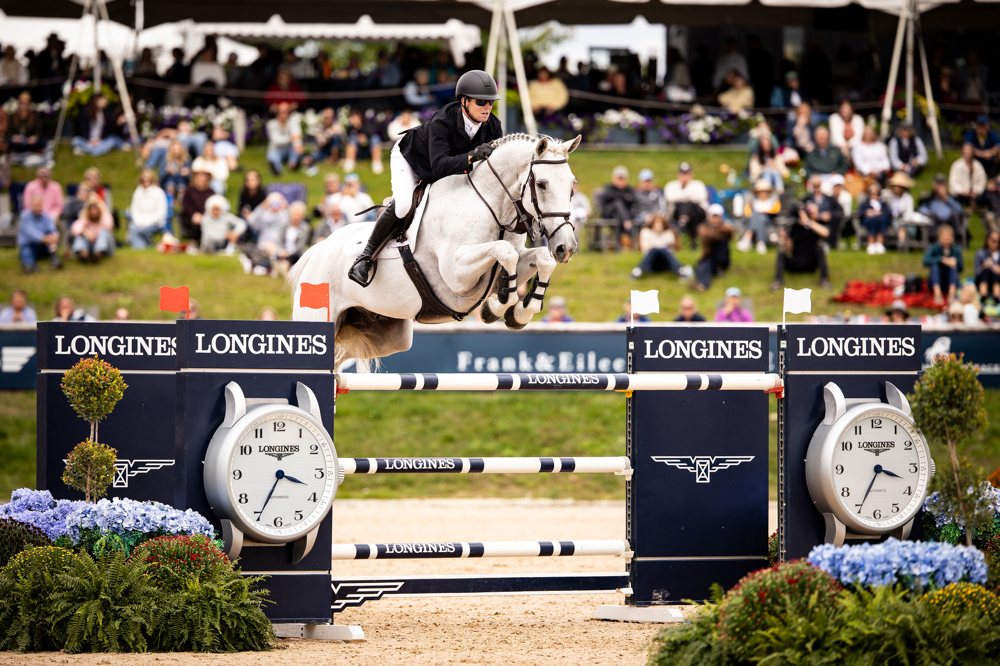

Old Boy SJ, el más rápido de los tres doble cero en el Gold Tour de Oliva Nova
Antonio Matos Almeida y Old Boy SJ se adjudicaron el Gran Premio del Gold Tour, la prueba que cerró, un día antes de lo previsto, el primer bloque del Autumn MET-I de Oliva Nova.

Uso editorial autorizado FEI
Algo más de medio centenar de participantes tomaron la salida y solo ocho alcanzaron el desempate. En ese segundo recorrido contra el cronómetro, tres conjuntos repitieron el cero. Ninguno se acercó al tiempo que marcaron Antonio Matos Almeida y "Old Boy SJ", castrado portugués de 8 años, que salieron de pista con el crono más rápido de la tarde.
La jornada final se disputó el sábado. Ante la previsión de lluvia para el domingo, la organización adelantó las pruebas del último día y el concurso terminó ese mismo sábado por la tarde.
"Old Boy SJ" llegaba a Oliva Nova con el bronce del Campeonato de Portugal, conseguido pocas semanas antes. Lo crió Rosarinho Líbano Monteiro. Es hijo de "Upercut Kervel", que a su vez desciende de "Diamant de Semilly", y de "Chelsie", por Orville III. Su único hermano, "Pretty Boy SJ", ganó esta temporada el Campeonato de Portugal de caballos de 7 años, título que ya había logrado con 6.
La lectura es sencilla: un caballo de 8 años con una medalla nacional reciente se impuso en un desempate de ocho, en el que solo tres repitieron el cero.
La segunda plaza fue para Mariano Martínez Bastida con "Bacardi O", yegua westfaliana de 10 años. El jinete llegaba de ganar el fin de semana anterior el Gran Premio del Silver Tour en el mismo recinto valenciano y esta vez se quedó a un puesto de repetir victoria.
El colombiano Dayro Arroyave completó el podio en tercera posición.
Por Lucía Valdeolmos